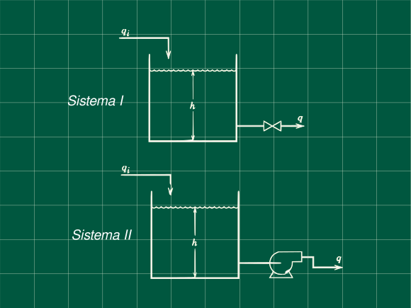

Problema 5.9 (Process Dynamics and Control - Seborg, Edgar, M, D)

Dos tanques mosntradoe en la figura, cada uno tiene un diámetro de 4 pie, Para el primer sistemas la válvula tiene una resistencia linear con la ecuación $$q = 8.33\ h$ con q en (gal/min) y h en (pie). Para el segundo sistema, la variación en el nivel del líquido no afecta el caudal de salida q . Suponga que cada sistema esta inicialmente en estado estacionario con hs=6 pie y qs=50 gal/min. A t=0 el caudal de entrada se incrementa de 50 a 50 gal/min.
Determine para cada sistema
a) La función transferencia H(s)/Q(s)
b) La función h(t)
c) Los nuevos estados estacionario
d) Si cada tanque tiene 8 pie de altura, ¿cuál tanque rebalsa primero y cuando?
e) Verifique los resultado en d) graficando lo resultados
Datos
d=hs=qis=qi=hs=q=4pie6pie50 gal/min70 gal/min8 pie8.33 h gal/min
Estandarizamos los datos anteriores (es decir convertimos a unidades compatibles) y obtenemos el área de los tanques.
(7.48 gal = 1 pie³)
A =4πd2 = 12.5665 pie2qis =50/7.48 = 6.6845 pie3/minqi = 9.3583 pie3/minq = 8.33min⋅piegal h7.48 gal1 pie3=1.1136 h
Para simplificar las operaciones hagamos q=kh con k=1.1136
Derivación de la ecuación tranferencia para el primer tanque
Escribiendo las ecuaciones de balance de materia (asumiendo densidad constante) en estado transitorio y en estado estacionario:
Adtdh=qi−kh
0=qis−khs
Restando ambas ecuaciones y pasando a variables desviación
AdtdH=Qi−kH
Aplicando la transformada de Laplace
AsH(s)=Qi(s)−kH(s)
Q(s)H(s)=As/K+11/K
Reemplazando valores conocidos
Q(s)H(s)=12.2845s+10.8980 ... (1)
Obteniendo la función transferencia para el segundo sistema
Planteando los balances en estado transitorio y estacionario con qb para el caudal de la bomba
Adtdh=qi−qb
0=qis−qb
Restando ambas ecuaciones y conviertiendo a variables desviación
Adtd(h−hs)=qi−qis
AdtdH=Qi
Aplicando la transformada de Laplace y despejando la función tranferencia
AsH(s)=Qi(s)
Qi(s)H(s)=As1
Reemplazando datos conocidos
Qi(s)H(s)=12.5664s1 ... (2)
Respuesta de los sistema a la perturbación
Decripción de la perturbación
Q(t)=q(t)−qs{qs−qsqi−qssi t<0si t>0
Q(t)=q(t)−6.6845{09.3583−6.6845=2.6738si t<0si t>0
Q(t)=2.6738u(t)→Q(s)=s2.6738
Q(s)=s2.6738
Reemplazando en la ecuación (1) Q(s)=s2.6738
H(s)=s(12.2845s+1)2.6738×0.8980
Separando en fracciones parciales y aplicando la antitransformada (Puede reemplazar de tablas directamente)
H(s)=2.4011(s1−s+1/12.28451)
H(t)=2.4011(1−e−t/12.2845)
Recordando que H(t)=h(t)−hs con hs=6 pie
h(t)=2.4011(1−e−t/12.2845)+6
Calculanado para que tiempo se llegará a una altura de h=8
8=2.4011(1−e−t/12.2845)+6
t=−12.2845ln(1−2.40112)
tI=21.98 min
Para el sistema 2 reemplazando (2) Q(s)=s2.6738
H(s)=s(12.5664s)2.6738
Realizando la antitranformada y despejando para h(t)
H(t)=0.2128⋅t
h(t)=0.2128t+6
El tiempo para el cual h=8
8=0.2128t+6
tII=9.40 min
Siendo que tII<tI determinamos que el sistema II rebalsa primero
Graficando ambos sistemas

Referencias
- Seborg, D. E.; Edgar, T. F.; Mellichamp, D. A.; Doyle, F. J. (2016). Process Dynamics and Control (4th edition). John Wiley & Sons, Inc. ISBN 978-1-119-28591-5.